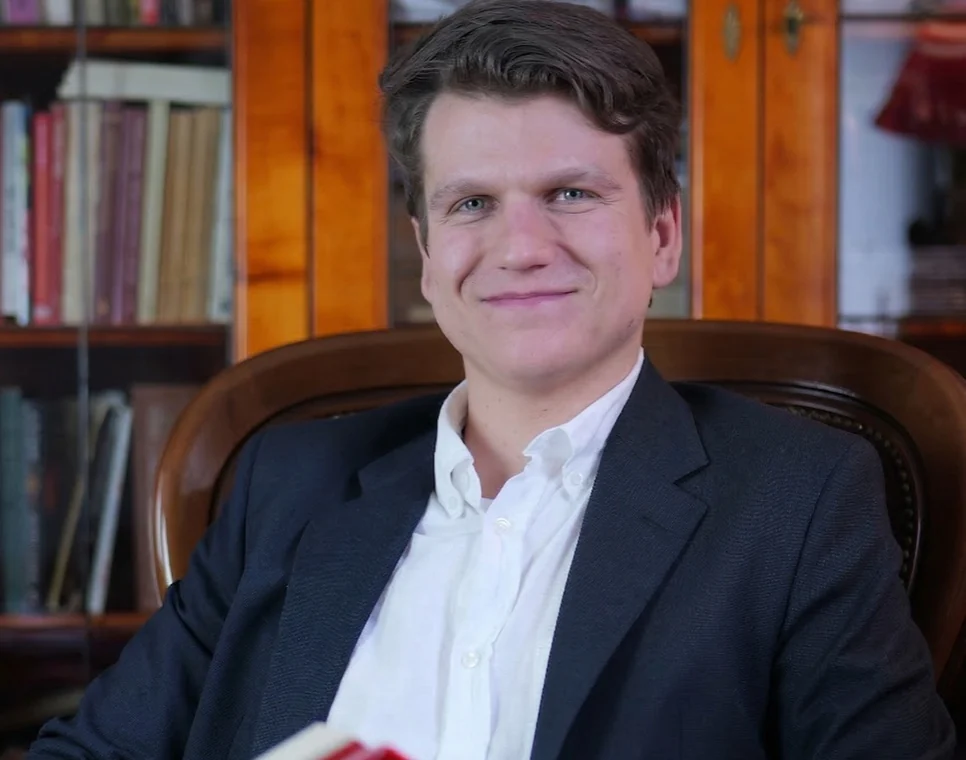

Serdecznie witam Cię na moim kursie Szybkie Czytanie Online.
Ta wiadomość to ostatni tekst, który czytasz wolno.
Rozpoczynasz właśnie podróż w stronę lepszego czytania, spokojnego i skupionego umysłu oraz oceanu produktywności. Jest mi niezwykle miło, że to ja będę Cię wprowadzać w tajniki czytania.
Szybkie czytanie zmieniło całe moje życie na lepsze i jestem pewien, że pomoże Ci się rozwinąć w każdej dziedzinie życia.
Widzimy się już za chwilę na pierwszej lekcji!
Piotr Dacjusz Starzyński
Co teraz?
- Zajrzyj na mailaDostęp do kursu jest już na Twoim adresie e-mail.
- Włącz pierwszą lekcjęPierwszy skok już w 15 minut.
- Weź książkę, którą teraz czytaszWiększość ćwiczeń wykonasz właśnie na niej.